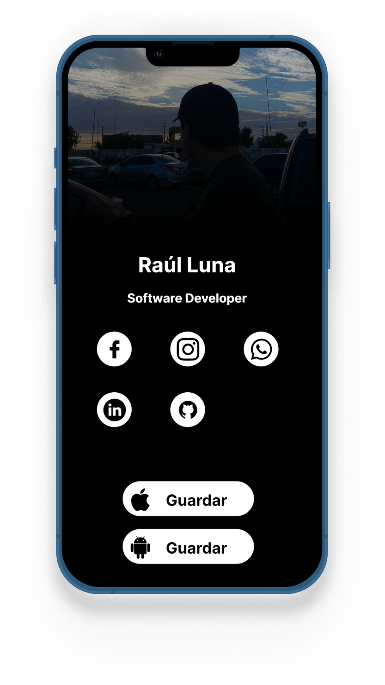
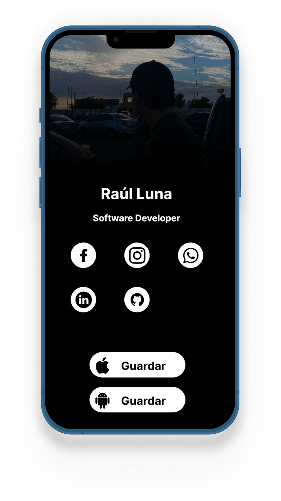

MeetCards: Moderniza tu presentación
La nueva forma de presentarte
MeetCards es un servicio que te ofrece la posibilidad de tener tu propia tarjeta digital.
 

¿Qué es MeetCards?
MeetCards es un servicio que permite a los usuarios crear y personalizar sus propias tarjetas de presentación digitales. Estas tarjetas son completamente personalizables y están diseñadas para adaptarse a cualquier tipo de negocio o uso personal. Ya sea que desees promocionarte en redes sociales, facilitar el contacto con clientes o simplemente presentarte de manera profesional, MeetCards tiene la solución perfecta para ti.
Nuestro origen
MeetCards nació gracias a la visión de dos jóvenes emprendedores que, mientras realizaban su servicio social en una agencia de seguros, observaron una necesidad creciente. Muchas personas querían dejar de gastar en tarjetas de presentación físicas debido al alto costo de las copias y el deseo de modernizarse. Fue así como estos estudiantes decidieron ofrecer una solución efectiva y económica: tarjetas digitales personalizadas que cualquier persona o negocio puede utilizar para promoverse.
Beneficios de Usar MeetCards
Ahorro de Costos
Uno de los principales beneficios de usar MeetCards es el ahorro significativo en costos. Las tarjetas de presentación físicas pueden ser caras, especialmente cuando necesitas hacer múltiples copias. Con MeetCards, solo necesitas pagar una tarifa anual de $200 pesos mexicanos para tener tu propia tarjeta digital, lo que representa una inversión mucho más baja en comparación con las tarjetas tradicionales.
Personalización Total
MeetCards ofrece una variedad de diseños predeterminados que puedes personalizar según tus necesidades y gustos. Esto te permite crear una tarjeta única que refleje tu personalidad o la identidad de tu negocio. Puedes incluir cualquier información que desees, desde tus perfiles en redes sociales hasta tu número telefónico para contactos directos.
Modernización y Profesionalismo
En un mundo cada vez más digital, tener una tarjeta de presentación digital te coloca a la vanguardia. No solo muestra que estás al día con las tendencias tecnológicas, sino que también te permite compartir tu información de contacto de manera rápida y eficiente. Con MeetCards, puedes enviar tu tarjeta digital por correo electrónico, mensaje de texto o incluso a través de redes sociales.
¿Para Quién es MeetCards?
MeetCards es útil para cualquier tipo de negocio o persona que desee promocionarse. Algunos de los usos más comunes incluyen:
- Promoción en Redes Sociales: Comparte fácilmente tus perfiles de redes sociales para aumentar tu visibilidad y seguidores.
- Contacto con Clientes: Facilita a tus clientes potenciales y actuales una forma rápida y fácil de ponerse en contacto contigo.
- Promoción Personal y de Negocios: Ya sea que seas un profesional independiente, un pequeño negocio o una gran empresa, MeetCards te ayuda a presentarte de manera profesional y moderna.
Casos de Éxito
Varios usuarios ya han experimentado los beneficios de MeetCards. Profesionales como agentes de seguros, consultores, diseñadores gráficos y muchos más han adoptado este servicio para modernizar su forma de presentarse y conectar con sus clientes. Las historias de éxito continúan creciendo a medida que más personas descubren las ventajas de tener una tarjeta de presentación digital.